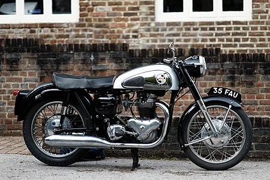

Awal Sepeda Motor
Sepeda motor adalah kendaraan beroda dua[1] yang digerakkan oleh sebuah mesin. Letak kedua roda sebaris lurus dan pada kecepatan tinggi sepeda motor tetap stabil disebabkan oleh gaya giroskopik. Sedangkan pada kecepatan rendah, kestabilan atau keseimbangan sepeda motor bergantung kepada pengaturan setang oleh pengendara. Penggunaan sepeda motor di Indonesia sangat populer karena harganya yang relatif murah, terjangkau untuk sebagian besar kalangan dan penggunaan bahan bakarnya, serta biaya operasionalnya cukup hemat. Di Indonesia, masyarakat lebih mengenal istilah sepeda motor dengan hanya sebutan motor saja. Ini kurang tepat menyebutkan kata motor yang sebenarnya merupakan sebuah alat yang mengubah energi menjadi tenaga mekanik.
Sejarah Motor

Sepeda motor merupakan pengembangan dari sepeda konvensional yang lebih dahulu ditemukan. Pada tahun 1868, Michaux ex Cie, suatu perusahaan pertama di dunia yang memproduksi sepeda dalam skala besar, mulai mengembangkan mesin uap sebagai tenaga penggerak sepeda. Namun usaha tersebut masih belum berhasil dan kemudian dilanjutkan oleh Edward Butler, seorang penemu asal Inggris. Butler membuat kendaraan roda tiga dengan suatu motor melalui pembakaran dalam. Sejak penemuan tersebut, semakin banyak dilakukan percobaan untuk membuat motor dan mobil. Salah satunya dilakukan oleh Gottlieb Daimler dan Wilhelm Maybach dari Jerman. Kedua penemu tersebut bertemu ketika bekerja bersama di Deutz-AG-Gasmotorenfabrik, produsen mesin stasioner terbesar pada tahun 1872. Pemilik Deutz-AG-Gasmotorenfabrik yang bernama Nikolaus Otto berhasil membuat mesin empat langkah atau yang disebut juga mesin empat tak dan penemuan tersebut dipatenkan pada tahun 1877. Walaupun mesin empat tak tersebut masih terlalu sederhana dan kurang efisien, tetapi mesin tersebut diharapkan dapat menggantikan mesin uap. Pada tahun 1880, Daimler dan Maybach dipecat dari perusahaan tersebut dan keduanya mendirikan sebuah bengkel di Stuttgart. Pada tahun 1885, keduanya menciptakan karburator untuk mencampur bensin dan udara sehingga dapat digunakan sebagai bahan bakar mesin empat tak ciptaan Otto. Mereka mengembangkan mesin empat tak tersebut menjadi silinder 100 cc dan meletakkan mesin tersebut pada sebuah sepeda kayu. Sepeda kayu bermesin tersebut disebut sebagai Reitwagen ("riding car") dan menjadi sepeda motor pertama di dunia.
Kesimpulan
Motor telah mengalami perkembangan pesat sejak pertama kali diciptakan pada akhir abad ke-19. Dari mesin uap hingga teknologi modern yang menggunakan bahan bakar dan listrik, motor telah menjadi salah satu alat transportasi yang sangat berpengaruh dalam kehidupan sehari-hari. Sepanjang sejarahnya, motor telah mengalami berbagai inovasi, baik dari segi desain, performa, hingga efisiensi bahan bakar. Selain sebagai alat transportasi yang praktis, motor juga telah menjadi simbol gaya hidup, budaya, dan hobi bagi banyak orang di seluruh dunia. Dengan semakin berkembangnya teknologi ramah lingkungan, masa depan motor diprediksi akan beralih ke tenaga listrik, memberikan solusi transportasi yang lebih hijau dan berkelanjutan.